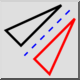
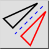
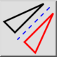
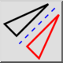

Specchia
Barra degli strumenti / Icona:
 

Menù: Modifica > Specchia
Scorciatoia: M, I
Comandi: mirror | mi
Questa è una traduzione automatica.
Barra degli strumenti / Icona:
 

Menù: Modifica > Specchia
Scorciatoia: M, I
Comandi: mirror | mi
Entità di specchi lungo un asse dato.